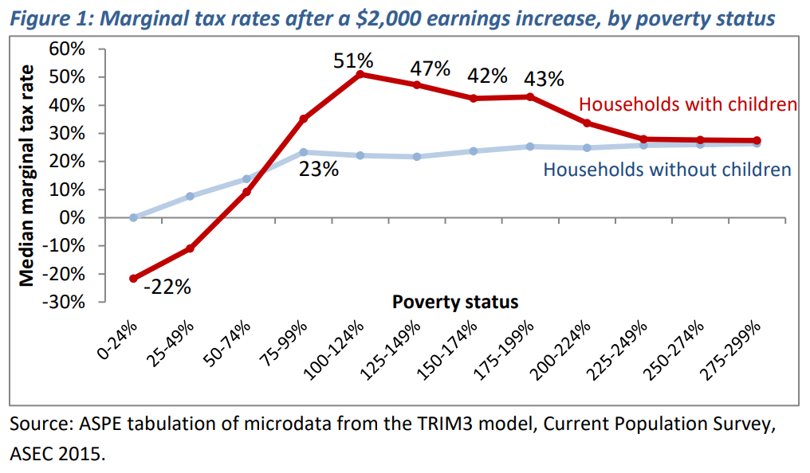

How could Andrew Yang's Basic Income for New York City be designed?
Over the next eight days, New York City Democrats will decide their party nominee for mayor. One of the candidates, former presidential candidate Andrew Yang, has centered his campaign around a shrunk-down local version of his national Freedom Dividend, which he calls “A Basic Income for New York City.” The plan promises to provide an average of $2,000 to each of the city’s 500,000 poorest adults.
In this post, I explore how this $1 billion program could be codified. I find that the plan can be characterized by a benefit program that guarantees 30% of the poverty line and phases out at 50 cents per dollar of income. Such a plan would reduce deep poverty by 60%, though it would also create significant work disincentives and distort marriage choices among NYC’s deeply poor population.
Poverty in New York City
NYC has unusually high poverty: in 2019, 19.2% of the population was in poverty, compared to 11.7% nationally. That’s based on the Census Bureau’s Supplemental Poverty Measure (SPM), which, unlike the Official Poverty Measure, accounts for a household’s1 in-kind benefits (e.g., food stamps), taxes, and, critically for NYC, housing costs—the SPM estimates that NYC residents face 21% higher cost of living than the national average.
NYC’s current 19.2% poverty rate is down from 23.9% when the Census Bureau began reporting the SPM, though it hit a high of 28.3% in 2012 in between. The deep poverty rate—the population share under half the poverty threshold—has followed a similar trend, from 7.8% in 2009 to a high of 9.1% in 2011 to its latest value of 4.9% in 2019.
Poverty rates fail to capture dynamics below the threshold, though. If a policy lifts someone from 10% of the poverty line to 90%, that doesn’t change the poverty rate; if it lifts them from 10% to 40%, it also doesn’t change the deep poverty rate.
So it’s also useful to consider the poverty gap, the sum of all deviations between a household’s resources and their poverty threshold, among families in poverty; that is, the poverty gap measures the total amount one would have to spend to end poverty, if the transfer were perfectly targeted. Similarly, the deep poverty gap measures deviations to half the poverty threshold.
NYC’s poverty gap in 2019 was $6.3 billion, and its deep poverty gap was $1.5 billion. Poverty gaps are less straightforward to interpret over time, since they vary with inflation and population changes, but their pattern roughly mirrors that of the poverty rates, exhibiting modest and inconsistent declines over time.
To smooth out the year-by-year noise, the rest of this analysis averages the three latest years of data, from 2017 to 2019.
Andrew Yang’s Basic Income Proposal
Yang’s campaign website spells out core features of the plan, indicating that it would provide monthly transfers averaging $2,000 per year to the “500,000 New Yorkers with the greatest need,” that these transfers would supplement existing benefits, and that the $1 billion program intends to end “extreme poverty.”
This document leaves some details unspecified, some of which Yang’s campaign staff clarified to me, others of which remain open questions:
- What is a “New Yorker”? Campaign staff defined this as an adult resident of NYC, in accordance with poverty reporting from the NYC-based nonprofit Robin Hood.
- How is poverty defined? Campaign staff also confirmed to me that the poverty definitions refer to the SPM. Given SPM’s accounting of housing costs, this aligns with Yang’s statement that “Our goal is to […ensure] that every household has an annual income that is at least above extreme poverty, taking into account the true cost of living in New York City.” Robin Hood’s Poverty Tracker emulates the Census Bureau’s approach with regard to the Supplemental Poverty Measure, though its results differ.
- How is “extreme poverty” defined? This is unclear, so I do not apply it as a defining constraint. Robin Hood’s 2019 report, based on their Poverty Tracker survey produced in conjunction with Columbia University, classified 500,000 NYC adults as in “deep poverty,” under the standard poverty definition of below half the poverty line. Meanwhile, the term “extreme poverty” is typically reserved for the World Bank’s global definition of about $2 per person per day—a depth of poverty under which virtually no Americans fall.
- Are the transfers person-based or household-based? On one hand, the program is focused on “New Yorkers”—adults—but on the other, it promises to end extreme poverty, which is defined at the household level. I assume that it’s household-based, like other welfare benefits.
- How is income defined for the purposes of qualifying for the benefit? The emphasis on the poverty rate suggests that the income measure would be the SPM resource measure; indeed, Yang’s staff confirmed that benefits like SNAP and housing assistance would count toward eligibility (though the reverse is not true). While estimating this resource measure in real time will create administrative difficulties (as I explain later), I assume that doing so is feasible and use it for my calculations.
- What is the maximum amount of the transfer? That is, how much should a household with no current income get? If the policy intends to eradicate deep poverty, then it must be at least half the household’s poverty threshold. As I show in the next section, however, this is not feasible given the $1 billion budget, so I explore smaller amounts; and as I explain later, basing the transfer on a household’s poverty threshold may create administrative challenges.
- What is the phase-out rate (i.e. marginal tax rate) of the transfer with respect to income? Alternatively, at what income level would the program no longer cover a household? For example, if the benefit maxes out at half a household’s poverty threshold, and it phases out dollar for dollar (100% marginal tax rate), then a household whose income is half their poverty threshold would receive $0; if the marginal tax rate is 50%, they would receive $0 when their income reaches their poverty threshold. The campaign told me that it would phase out at some rate, rather than having a cliff, but they did not specify the rate.
In summary, I assume that the program would guarantee a certain percentage of a household’s SPM poverty threshold and phase out at a certain rate with respect to their SPM resources. To determine the parameters that satisfy Yang’s constraints ($1 billion budget and 500,000 adult recipients), I turned to microsimulation.
Identifying a feasible reform
Yang’s plan has two criteria: it must reach 500,000 adults and cost $1 billion. There are also two unknown policy parameters: the maximum value (as a share of a household’s poverty threshold), and the phase-out rate (with respect to resources). Many potential policies could satisfy either of these conditions, but only one satisfies both.
Consider, for example, three potential phase-out rates: 25%, 50%, and 100%. The slower the phase-out, the more a given policy costs, ceteris paribus; UBI, with a 0% phase-out, is the most expensive option, while a 100% phase-out is cheapest (though it removes all incentive to work). At a 25% phase-out, a benefit could only guarantee 20% of the poverty threshold while staying under the $1 billion budget. At a 50% phase-out rate, the benefit could guarantee 30% of the poverty threshold, and a 100% phase-out could guarantee 39%.
To reach 500,000 adults, I run the same exercise. At a 25% phase-out, the benefit can only max out at 15% of the poverty threshold. At 50%, it’s 30%, and at 100%, it’s well over 50%.
Combining these constraints, we can map the contours that satisfy each condition. This reveals that the policy that satisfies both (a) guarantees 30% of the poverty line, and (b) phases out at 50 cents per dollar of income.
The reform’s impact
Poverty rates are ill-suited to evaluating policies that target the deeply poor population the way this does. Since the reform fully phases out for families with resources of 60% of their poverty threshold, it leaves the poverty rate unchanged. This demonstrates limitations of the poverty rate as a policy evaluation tool: it fails to capture reductions in the extent of poverty.
Even the deep poverty rate largely fails to capture the policy’s impact. The benefit is 83% phased out for families at the deep poverty threshold (50% / 60%), so while it does have some effect, the bulk of the impact is in reducing the depth of deep poverty.
The policy most affects the deep poverty gap—lowering it by 60%—which makes sense given it aims to reduce the depth of poverty.
Administrative and incentive considerations
While this plan would achieve significant deep poverty reduction, it may also face administrative challenges, and it would certainly create perverse incentives for recipients.
Basing the monthly program on SPM resource values would be difficult. SPM resources include all cash income, as well as in-kind benefits and taxes throughout the year. That means that program officers would have to estimate households’ annual income, benefits, and taxes, each month to determine their payment amount. Recipients would face this administrative burden as well, having to report any change to income, benefits, projected tax liability, or household structure to the city. Tax liability aside, this is largely consistent with other benefit programs, though those other benefit programs do fail to reach some of the poor, and these hoops plausibly explain some of those exclusion errors.
The program would add 50 percentage points to recipients’ marginal tax rates. According to the Department of Health and Human Services, most households below 75% of the poverty line (as would be targeted by this program) currently face marginal tax rates of 10% or less. However, by changing that from 10% to 60%, or even 0% to 50%, the program would make the deeply poor population some of the highest taxed segment of the population. Studies find that workers in the lowest income decile are the most sensitive to marginal tax rates, suggesting that labor supply would fall as a result.

The program would also distort marriage incentives, both toward and away from it. For example, someone with no income would gain a larger benefit from staying single than from partnering with someone with income; on the other hand, two people with similar income may gain a larger benefit from partnering, depending on their poverty threshold. This also is not a problem that’s new either to benefit programs or the tax code, but the generosity of the payment and steep phase-out make the issue especially prominent.
Conclusion
A policy consistent with Andrew Yang’s policy outline would reduce deep poverty by 60%, largely helping people escape the deeper depths of poverty that cause lasting harms, especially to children. The sharp means-testing could make it harder to reach eligible recipients, and it will distort those recipients’ incentives, but providing cash transfers without a work requirement across NYC would constitute a new step toward an unconditional safety net.
-
Throughout this analysis, I use “household” as shorthand for Supplemental Poverty Measure unit, a household-like concept created by the Census Bureau to group (actual) household members that share resources. ↩
Subscribe to the UBI Center
Get the latest posts delivered right to your inbox